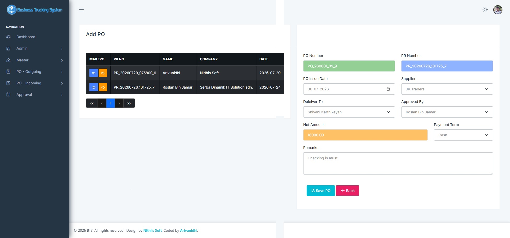

Business Tracking System – Modules & Features
Client :
Environment :
Business Tracking System
The Business Tracking System is a comprehensive procurement management solution designed to simplify and automate the complete purchasing workflow within an organization. It helps businesses manage purchase requests, approvals, purchase orders, vendor information, and procurement records in a centralized and efficient manner.
The system improves transparency, reduces manual paperwork, minimizes errors, and ensures that every procurement activity is properly tracked from the initial request to the final purchase.
Key Features
- Purchase Requisition (PR) Management
- Create, edit, approve, and track purchase requisitions.
- Assign PR numbers automatically.
- Maintain complete purchase request history.
- Monitor pending, approved, rejected, and completed requests.
- Purchase Order (PO) Management
- Generate Purchase Orders directly from approved Purchase Requisitions.
- Manage supplier quotations and pricing.
- Print and export professional Purchase Orders.
- Track PO status until completion.
- Approval Workflow
- Multi-level approval process.
- Department-wise authorization.
- Approval history with date and user details.
- Notification for pending approvals.
- Vendor Management
- Maintain supplier information.
- Store contact details and company profiles.
- Track vendor performance.
- Maintain vendor purchase history.
- Item Management
- Product and material master records.
- Unit of measurement management.
- Category-based item organization.
- Price and specification tracking.
- Reports & Analytics
- Purchase Requisition Reports.
- Purchase Order Reports.
- Vendor-wise Purchase Reports.
- Department-wise Procurement Reports.
- Monthly and Yearly Purchase Analysis.
- Export reports to Excel and PDF.
- User Management
- Secure user authentication.
- Role-based access control.
- Department-level permissions.
- Activity logging.
Benefits
- Reduces manual paperwork.
- Speeds up procurement processes.
- Improves approval efficiency.
- Enhances purchasing transparency.
- Maintains accurate procurement records.
- Supports better financial planning.
- Reduces procurement errors.
- Increases operational productivity.
System Workflow
- User creates a Purchase Requisition (PR).
- The PR is submitted for approval.
- Authorized personnel review and approve the request.
- An approved PR is converted into a Purchase Order (PO).
- The Purchase Order is sent to the selected vendor.
- The procurement process is monitored until delivery and completion.
- Reports are generated for management and auditing purposes.
Applications
The PR & PO Business Tracking System is suitable for:
- Manufacturing Companies
- Construction Firms
- Government Organizations
- Educational Institutions
- Healthcare Organizations
- Retail Businesses
- Trading Companies
- Service-Based Organizations
- Corporate Enterprises
This system provides a reliable and efficient platform for managing procurement activities, improving operational efficiency, and ensuring complete visibility into the organization's purchasing process.